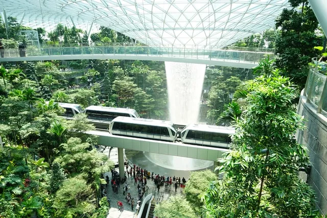
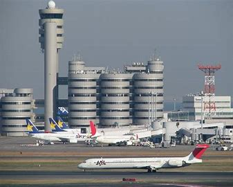
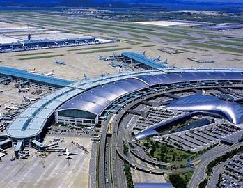
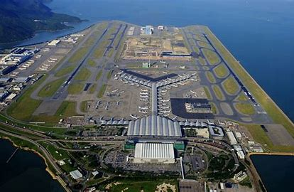

Los 5 aeropuertos famosos
Singapur
Singapur, Changi El aeropuerto Changi de Singapur ha sido reconocido por séptimo año consecutivo como el mejor aeropuerto según World Airport Awards. Conecta a viajeros con 200 destinos diferentes, realizando 5.000 llegadas y salidas semanales y cuenta con 80 aerolíneas internacionales. El pasado mes de abril vio la luz su joya, una enorme instalación que compone al aeropuerto con laberintos, jardines interiores e incluso una cascada natural.
Tokio Haneda
Tokio, Haneda El aeropuerto internacional de Tokio, Haneda, ofrece a sus viajeros una amplia oferta de servicios y productos tanto souvenires como gastronómicos que recrean las calles de la capital. Con sus terminales nacionales e internacionales actúa como promotor del desarrollo de Japón en el ámbito turístico. Haneda es también el aeropuerto más limpio del mundo.
Seul Incheon
Seúl, Incheon El aeropuerto internacional de Incheon es el más grande de Corea del Sur y de los aeropuertos con más tránsito a nivel global. Anteriormente, también se había posicionado como el mejor aeropuerto del mundo, distinguiéndose por su oferta de ocio al contar con un campo de golf, una sala de baile, un casino y un museo sobre la cultura coreana.
Hammad
Doha, Hamad El aeropuerto internacional de Hamad se encuentra en la capital de Qatar, Doha. Destaca por su complejo de terminales –referencia arquitectónica mundial– y por la abundante tecnología instalada en ellas. Además, sus increíbles instalaciones compensan cualquier retraso de vuelo que puedas tener, pues lo convierten en el aeropuerto más lujoso del mundo.

Hong Kong
Hong Kong El aeropuerto internacional de Hong Kong cuenta con más de 100 aerolíneas operando a más de 180 destinos nacionales e internacionales. Este aeropuerto también ha sido el ganador del ranking de mejor aeropuerto del mundo. Cuenta con un cine IMAX con capacidad para 350 personas y un simulador de vuelo que te permite vivir la experiencia de un piloto desde su mismo asiento. Además, ha sido reconocido como el aeropuerto con mejor oferta gastronómica.
